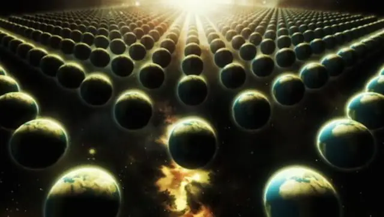

Science news ·
Are parallel universes real? – Hani Al-Dhulaie / Al Jazeera Net
Hani Al-Dhulaie distinguishes the Qur'anic concept of "the heavens" from the modern concept of "the universe" and asks whether parallel universes are real.
This post is in Arabic; the title and summary above are translated. The original text follows.

هناك اختلاف بيّنٌ بين ما يفسره البعض لمفهوم (السماء والسماوات) الوارد في القرآن الكريم، وبين مفهوم (الكون) ذلك المصطلح الحديث الذي لم تعرفه العرب من قبل. فالسماء كل ما علا، والسماوات طبقات غير معلومة الحقيقة وربما تكون نوعا من الغيب. لكن الكون هو كل شيء مادي كائن أو سيكون، ويضم بتعريفه المبسط النجوم والمجرات والكواكب وكل شيء يمكن رصده، وحتى المادة المظلمة والطاقة المظلمة التي تتسبب في تباعد المجرات بعضها عن بعض بما يعرف بتوسع الكون أو الزمكان وتشكلان معا أكثر من 94% من الكون، لكنهما بعد لم تكتشفا بشكل واضح. وبالعودة إلى عالم الفيزياء الشهير ألبرت آينشتاين، فإنه يعرّف الكون بأنه كل كتلة أو طاقة أو زمان أو مكان. فلا يمكن تخيل الزمان دون مكان، ولا المكان دون أن يمر عليه زمان. وهو غير نهائي لكنه محدود. ونصف قطره المرئي يبلغ حتى الآن 13.8 مليار سنة ضوئية لكن نصف قطره المحسوب يفوق ذلك بأضعاف كثيرة. وتحكم الكون قوانين موحدة لا تختلف في أي بقعة منه ولا تتضارب، فكتلة نواة الهيدروجين هنا هي ذاتها كتلة نواة الهيدروجين عند الطرف الآخر من الكون، وشحنة الإلكترون ثابتة في أية بقعة من الكون، وكذلك العدد الذري والكتلي لأي من عناصر الجدول الدوري ونظيراته ثابتة لا تتغير. وبالضوء تنتقل المعلومات، وهو صاحب سرعة ثابتة أيضا لا تتغير في الفضاء والفراغ أبدا. وحيث إن مادة الكون واحدة ونواميسه واحدة، فإن المعلومات المنتقلة فيه تتبع ذات النواميس. ولكن ماذا لو كان هناك كون آخر غير كوننا؟ هل يصح لنا أن نطلق عليه اسم كون؟ ربما، لكن الصعوبة وربما الاستحالة ستكمن في أن نعرف كيف لنا أن نتواصل مع هذا الكون، فهل ذلك مقبول عقليا أو رياضيا على الأقل؟
“إن وجود كون آخر منفصل عنا يستلزم خبرا حتميا صادقا، كأخبار الغيب، إذ إن الاتصال به لن يكون ممكنا إذا كانت النواميس والثوابت الكونية فيه تختلف عن نواميس كوننا وثوابته”
السر في الأمر أن وجود كون آخر منفصل عنا يستلزم خبرا حتميا صادقا، كأخبار الغيب، إذ إن الاتصال به لن يكون ممكنا إذا كانت النواميس والثوابت الكونية فيه تختلف عن نواميس كوننا وثوابته، فلا يمكن لشعاع الضوء أن ينقل لنا حينها خبرا، لأنه لن يكون الرسول المناسب الذي يفهم لغة ذلك الكون أو طبيعته. ناهيك عن معضلة أخرى أكبر من ذلك، فبحسب نظرية النسبية العامة لآينشتاين، فإن الزمان والمكان خلقا معا لحظة الانفجار العظيم التي بدأ معها كوننا قبل قرابة 13.8 مليار سنة من الآن، وإذا كان كل شيء نعرفه أو سنعرفه مستقبلا يقع ضمن حدود هذا الكون، فأنى لنا ونحن من طبيعته وجزء من ناموسه أن نرصد شيئا خارجه؟ فالمصطلحات (خارج وداخل) هي مصطلحات مردودة بحسب نظرية الانفجار العظيم، إذ لا معنى لها قبل الكون فهي خلقت مع خلقه، والداخل والخارج أجزاء منه نفسه، فلا يمكن أن نتخيل كونا ككرة مثلا وكونا آخر ككرة أخرى بجانبه، لأن الفراغ بينهما سيناقض المفهوم السابق. ومع ذلك فليس أمام العلماء إلا أن يفعلوا ذلك حين يتحدثون عن الأكوان المتعددة أو الأكوان المتوازية. فهل تمنع قوانين الفيزياء مثل تلك الأكوان؟ يعود ظهور فكرة الأكوان المتوازية للعام 1954 حين حاول أحد الفيزيائيين ويدعى أفيريت حل معادلات نظرية الكم، وخاصة تلك التي تتكلم عن حساب احتمالات وقوع الحوادث الكمية (على المستوى الذري)، ويعرف بمبدأ عدم التحديد، وينص على أنه في حال دراستنا لمادة كمية (جزيئات تحت ذرية) فإننا سنلاحظ أنها تتصرف بشكل غير منضبط، مما سيجعلنا غير متأكدين من طبيعة هذه المادة الكمية أو خصائصها. فمثلا، إذا درسنا سلوك الفوتونات الضوئية، فسنجد أنها تتصرف أحيانا كجسيمات، وتتصرف أحيانا أخرى كموجات. كما أنه لا يمكن الجزم بأي الاحتمالين يمكن حدوثه لحادثة ستقع بنسبة 50%، فإذا وضعنا كرتين إحداهما بيضاء والأخرى سوداء داخل كيس وأردنا أن نسحب كرة واحدة فقط، فاحتمال ظهور كليهما متساوٍ، ولا يمكن الجزم مسبقا ما الكرة التي سيتم سحبها. فإذا ما سحبت البيضاء مثلا، نفذ القدر، ليصبح احتمال ظهور البيضاء هو 100% وظهور السوداء 0%. لكن الفيزيائي أفيريت، وخروجا من هذا المأزق، افترض أن هذا الشخص ذاته موجود في كون آخر موازٍ لكوننا ويقوم بالتجربة نفسها في الوقت نفسه لكنه سحب الكرة السوداء بدلا من البيضاء، فتحقق بذلك الاحتمالان. فإن كانت الاحتمالات ثلاثة وجدت هنالك ثلاثة أكوان، وإن كانت مئة كان هنالك مئة كون آخر، إلى ما لا نهاية من الأكوان الموازية التي تنشأ لحظة الاختيار. غير أن تلك الأكوان المتوازية غير مقبولة عقلا (بحسب سعة إدراكنا ومنطقنا)، مع أنه من المفترض أن العقل لا يدركها، مما أثار جدلا واسعا جدا بين العلماء وأوجد أسئلة لا يوجد لها إجابات جعلت الشكل الذي قدمت به النظرية مرفوضا تماماً، ومنها: متى تكونت هذه العوالم أو الأكوان؟ وكيف يمكنها أن تتكون بهذه السرعة؟ أم أنها ربما تكون موجودة منذ البداية؟ وما علاقتها ببعضها البعض؟ وأيها الكون الأصلي وأيها الكون التابع؟ وغيرها من الأسئلة.
“نظرية الأوتار الفائقة تقول إن مادة الكون ليس أصغرها الذرات والبروتونات والكواركات، بل ثمة أشياء لا متناهية الصغر هي اللبنات الأساسية للمادة وهي أوتار تتذبذب بطرق مختلفة، فتشكل لنا المادة التي نعرفها حولنا من عناصر طبيعية وأرض وهواء وكواكب ونجوم ومجرات.”
وفي سبعينيات القرن العشرين، ظهرت نظرية أخرى أكثر اتساقا من نظرية إيفيريت، هي نظرية الأوتار الفائقة التي تقول إن مادة الكون ليس أصغرها الذرات والبروتونات والكواركات، بل ثمة أشياء لا متناهية الصغر هي اللبنات الأساسية للمادة وهي أوتار تتذبذب بطرق مختلفة، فتشكل لنا المادة التي نعرفها حولنا من عناصر طبيعية وأرض وهواء وكواكب ونجوم ومجرات. وتضيف النظرية أن هذه الأوتار تعيش في كون ذي أبعاد تسعة، وليست ثلاثة أبعاد فقط كالذي نعيش نحن فيه. ولذلك فإن العوالم التي تعيش في الأبعاد الستة الباقية والتي هي أبعاد أعلى من أبعادنا، يمكنها أن ترانا ولا نراها، وتدركنا ولا ندركها. واستنادا إلى تلك النظرية فإنه توجد أكوان موازية لكوننا، لكننا لا ندري أهي داخل كوننا أم خارجه. ولكن، لو كشفت لنا الحجب وتمثلت لنا هذه الأبعاد المحسوبة رياضيا فقط (وليس عليها أدنى دليل مادي ولا رصدي حتى اليوم) فإننا سنتمكن حينها من رؤية تلك الأكوان الموازية والعوالم الأخرى. ولعل البعض يذهب إلى تفسير عالمي الجن والملائكة من هذا القبيل لأنهم موجودون في (أبعاد) يدركوننا فيها ولا ندركهم، ويروننا فيها ولا نراهم. وفي الثمانينيات من القرن الماضي وضع عالم الفيزياء النظرية ستيفن هوكينغ مع فيزيائي يدعى جيمس هارتل فرضية مفادها أن الانفجار العظيم خلف أكوانا متوازية، كفقاعات بعضها بجوار بعض، بعض هذه الأكوان يشبه كوننا قوانين ومكونات، وأخرى تختلف عنه في كل شيء. لكن هوكينغ أعاد النظر مؤخرا في هذه الفرضية ليخلص إلى أنه لو كان هناك عدد لا نهائي من الأكوان بقوانين فيزيائية مختلفة في كل منها، فإنه سيكون من المستحيل تحديد نوع كوننا الذي نعيش فيه بواسطة الأرصاد التي يقوم بها علماء الكون. لذلك قام قبل وفاته بمناقشة هذه المشكلة مع الفيزيائي البلجيكي توماس هيرتوغ، وبالإبقاء على حسابات نظرية الأوتار الفائقة، خرجا بنماذج رياضية جديدة تشير إلى أن هذه الأكوان المتوازية لها القوانين الفيزيائية نفسها. ونتيجة لذلك فإن كوننا هو مثل أي كون آخر، ومن الممكن دراسة ظهور جميع الأكوان المتوازية الأخرى من خلال دراسة كوننا. فهل ينفي الدين مثلا وجود أكوان أخرى وبشر آخرين وسماوات طباقا؟ وهل ذكر القرآن نصوصا تثبت ذلك صراحة أو تنفيه؟ الظاهر أن الإجابة لا، علما بأن الكثيرين ممن يخوضون في تفسير آيات بدء الخلق وانتهائه يظنون أن نظرية الانفجار العظيم مذكورة صراحة في القرآن الكريم، وهي (في ظني كباحث) ليست كذلك، فآيات الرتق والفتق وآيات طي السماء هي آيات لا علاقة لها بنشأة الكون ولا نهايته، إنما تدلل على نشأة الأرض ومجموعتنا الشمسية مع بقاء مصطلح السماوات غيبا لا نعلم تفسيره حتى اليوم ولربما كُشف لبعض من سيأتي بعدنا بعشرات أو مئات من السنين. إلى جانب ذلك فإن انهيار الكون تحت مسمى الانكماش العظيم، وهو عكس الانفجار العظيم، يستلزم فناء المادة كلها، بما فيها النجوم والكواكب والشمس والأرض والسماء، وهو ما يقرر القرآن الكريم خلافه حين يذكر تكوير الشمس وتبديل الأرض والجبال، وتغير شكل السماء، وانكدار النجوم، وتناثر الكواكب، وكل ذلك يثبت بقاء هذه الأشياء مرئية، ولو فنيت لما ذكرها القرآن في معرض حديثه المتكرر عن أحداث الآخرة. وتظل نظريات خلق الكون مجرد فرضيات ونماذج رياضية بحتة، يصح بعضها بالمشاهدات المتتالية، مثل نظرية الانفجار العظيم التي تؤيدها ثلاث مشاهدات أصيلة وقوية تنبأت بها النظرية، هي نسبة الهيدروجين إلى الهيليوم في الكون 75%- 25%، وتباعد المجرات (الذي اكتشفه هابل في عام 1928 واكتشفته حلول الفيزيائي الروسي فريدمان لمعادلات آينشتاين)، ودرجة حرارة الكون الأولي التي تعادل 270 درجة تحت الصفر والتي اكتشفها الفيزيائيان ينزياس وويلسون في عام 1965. وكل ما عدا تلك النظرية (كالأوتار الفائقة والنفق الدودي والانتقال عبر الزمان والأكوان المتوازية إضافة إلى بعض خصائص الثقوب السوداء) هي مجرد فرضيات ذات حلول رياضية لم تؤيدها أي من المشاهدات حتى الآن. والزمان كفيل بإثباتها أو نفيها، حيث مستقبل العلم والكشوفات العلمية لا يزال في أوله،
“وما أوتيتم من العلم إلا قليلا”.
المصدر: الجزيرة نت
Migrated from the AUASS website archive as published, with the formatting tidied.